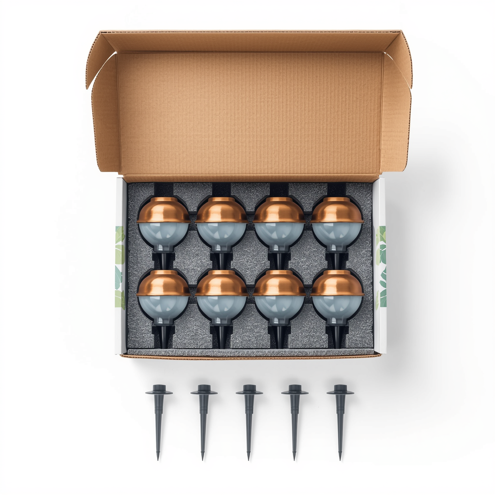

Solar Garden Stake Light · 8-Pack
Retail-ready stake lighting for gardens and pathways — frosted-glass diffusers on durable ABS, IP65, sold in 8-pack and 12-pack consumer boxes ready for the shelf.

This is the volume mover of the garden range — the product that fills a retail end-cap. Frosted glass softens the glow along a path or border, ABS construction survives the seasons, and the 8-pack / 12-pack consumer boxes are designed for shelf and e-commerce sale. For distributors serving DIY, hardware and garden-centre channels, this is the reorder SKU.
Specifications
| Power | 1.2W per light |
|---|---|
| Material | Frosted glass diffuser + ABS body |
| IP rating | IP65 |
| Battery | 600mAh |
| Runtime | 8 hours per charge |
| Packaging | 8-pack & 12-pack retail boxes |
| Certification | CE + RoHS |
| Customisation | OEM / ODM — packaging, branding |
Why buyers choose it
Retail-ready packaging. 8-pack and 12-pack consumer boxes sell straight off the shelf or online — no repackaging.
Frosted-glass look. A softer, more premium glow than bare plastic stake lights at the same price tier.
High-volume SKU. The fast-reordering garden line that anchors a seasonal range.
Certified & OEM-ready. CE + RoHS with every quotation; custom packaging and branding available.